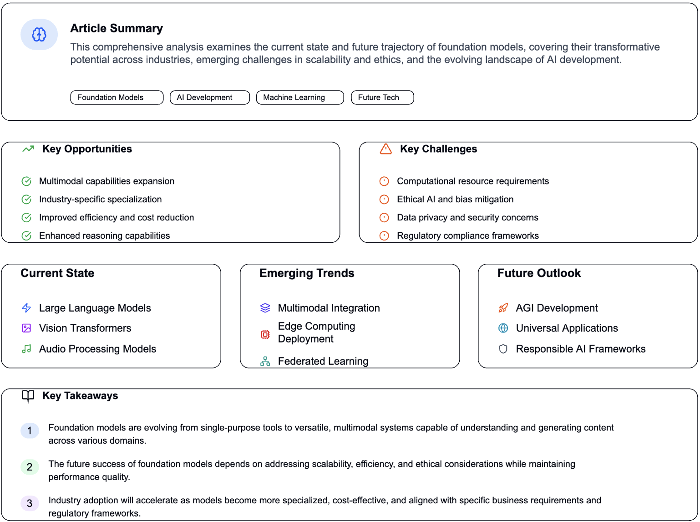

Exploring Foundation Models: A Guide to the AI Revolution¶
The Two Forces Shaping AI: Emergence and Homogenization¶
Artificial Intelligence has experienced a significant transformation over the last thirty years, driven by two key forces that are redefining the development and implementation of AI systems.
Emergence refers to the natural development of capabilities during training, rather than through explicit programming. Imagine teaching a child to ride a bike; you don't dictate every movement, but through practice, the skill emerges organically.
Homogenization indicates the adoption of similar methodologies across various challenges. Instead of creating entirely distinct solutions for each problem, we now implement standardized techniques that are applicable across multiple scenarios.
The Three Stages of AI Evolution¶
Stage 1: The Machine Learning Revolution (1990s)¶
Prior to machine learning, programmers had to define specific rules for every task. For instance, to identify spam emails, one might code rules like "if the email includes 'FREE MONEY', classify as spam."
Machine learning revolutionized this process by allowing computers to learn from examples. Instead of coding rules, we provided computers with thousands of emails labeled as "spam" or "not spam," enabling them to autonomously recognize patterns.
Example: Instead of crafting specific rules for credit approvals, banks could supply historical loan data to algorithms that learn to predict loan defaults based on data patterns.
Stage 2: The Deep Learning Breakthrough (2010s)¶
Traditional machine learning required human experts to identify crucial features. For image recognition, specialists had to manually determine that edges, corners, and textures were important to detect.
Deep learning changed this dynamic by enabling models to automatically identify significant features. Neural networks with multiple layers could learn complex patterns directly from unprocessed data.
Example: Rather than programming a computer to recognize cats by identifying pointy ears and whiskers, deep learning systems could automatically learn these characteristics by analyzing thousands of cat images.
Stage 3: The Foundation Models Era (2018-Present)¶
Foundation models mark the latest advancement, where a single large model is trained on extensive datasets and then tailored for various tasks.
Key Innovation: These models utilize "self-supervised learning," allowing them to learn by predicting missing data parts instead of relying on human-labeled examples.
Example: A language model like GPT learns by processing billions of web pages and predicting the next word in sentences. Through this method, it acquires an understanding of grammar, facts, reasoning, and even creative writing—without direct instruction.
Real-World Applications and Examples¶
Healthcare¶
A single foundation model trained on medical images, patient records, and research documents could be utilized to:
- Diagnose skin conditions from images
- Analyze X-rays for fractures
- Predict patient outcomes
- Aid in drug discovery
Education¶
The same foundational model could enhance:
- Personalized tutoring systems
- Automated essay evaluation
- Language learning applications
- Generation of educational content
Business Operations¶
Foundation models facilitate:
- Customer service chatbots
- Document analysis and summarization
- Code generation and debugging
- Market analysis and forecasting
The Significance of Emergent Capabilities¶
One of the most intriguing aspects of foundation models is their emergent abilities—skills that arise unexpectedly as models grow larger.
In-Context Learning Example: GPT-3 showcased the ability to learn new tasks from conversation examples without additional training. By providing a few examples of translating English to French, it can continue translating, despite not being specifically trained for this task.
This is akin to a student who, after extensively studying literature, suddenly excels at writing poetry without ever having taken a poetry class.
The Double-Edged Sword: Advantages and Challenges¶
Benefits of Homogenization¶
- Efficiency: Enhancements to one foundation model benefit all applications built upon it.
- Accessibility: Smaller organizations gain access to powerful AI without needing to develop from the ground up.
- Cross-domain Innovation: Successful techniques in one area can swiftly transfer to others.
Risks of Homogenization¶
- Single Points of Failure: Flaws in widely-used foundation models can propagate across all applications.
- Bias Amplification: Prejudices in training data can be inherited by all applications.
- Lack of Diversity: Over-reliance on similar methods may stifle innovation.
Looking Ahead: The Multimodal Future¶
The next frontier involves creating models that can process various types of data simultaneously.
Example: A future foundation model could:
- Read a news article about a scientific discovery
- Analyze related research papers and data charts
- Watch video explanations of the concept
- Generate a comprehensive summary with visual aids
This represents the pinnacle of homogenization—one model capable of handling text, images, audio, and video together.
Key Takeaways for the Future¶
-
Foundation models are becoming the backbone of modern AI, similar to how operating systems serve as the foundation for computer applications.
-
Emergence presents both opportunities and challenges—we gain powerful capabilities that we didn't explicitly program, but we also encounter unexpected behaviors.
-
The concentration of AI development around a few foundation models yields efficiency gains but also presents systemic risks that require careful management.
-
Grasping these models remains a vital challenge—their complexity complicates the prediction of their behavior and the identification of potential issues.
As we progress, the primary challenge lies in leveraging the immense potential of foundation models while managing the inherent risks associated with their widespread use. This calls for ongoing research aimed at enhancing the interpretability, reliability, and alignment of these systems with human values.
citation: Bommasani, Rishi, et al. "On the Opportunities and Risks of Foundation Models." arXiv preprint arXiv:2108.07258 (2021) arXiv: https://arxiv.org/abs/2108.07258